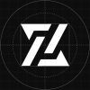

Brand identity
system.
ZYBERLANE / v1.0.0-draft.1 / REVIEW COPY
Built Beyond Boundaries.
01 / Foundation
Technology & Transformation Company. From Brand Identity to Physical Intelligence. Clear, precise, ambitious, factual. Future industrial capabilities are not current commercial offers.
02 / Logo

Four original paths, nine original vector wordmark glyphs, 54% width, bounding-box center 50/50, 14.3% minimum radial clearance. Never stretch, redraw or recolor the mark.
03 / Color
Screen values are sRGB. Confirm print profile and physical proof before assigning CMYK or Pantone.
04 / Typography
Original vector wordmark. Existing Helvetica Neue / Inter Tight stack; Inter Tight is the licensed portable font. Use responsive hierarchy, readable body text and native mono for technical labels.
05 / Applications and motion
Monochrome, quiet geometry, generous negative space. Use provided social templates; respect reduced motion. Physical merchandise and 3D/video masters require production verification.
06 / Architecture and governance
One parent identity. XR and Labs use product suffixes. Version approved exports and review changes before publishing. Do not claim third-party endorsement or invent work.